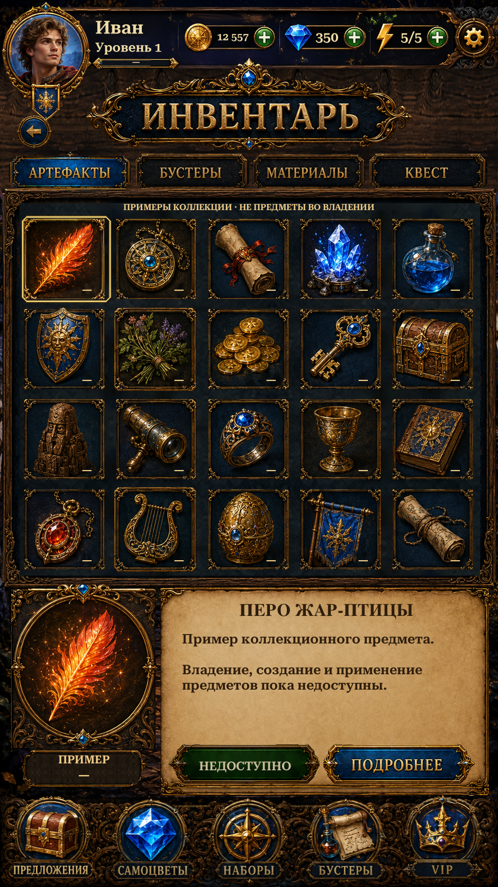

Original category frames and Russian lettering replace the generic tabs. The Details button retains original source lettering; English remains live and localizable. Unavailable Use stays clearly disabled.
Booster quantities use saved gameplay data. Collectible items remain labelled design previews; no ownership, crafting or item use is fabricated. Unity views are actual Play Mode captures with isolated saves and simulated phone dimensions/safe areas; reference and previous-version views are labelled separately.

Changes and validation · Remaining reference differences · Verification results